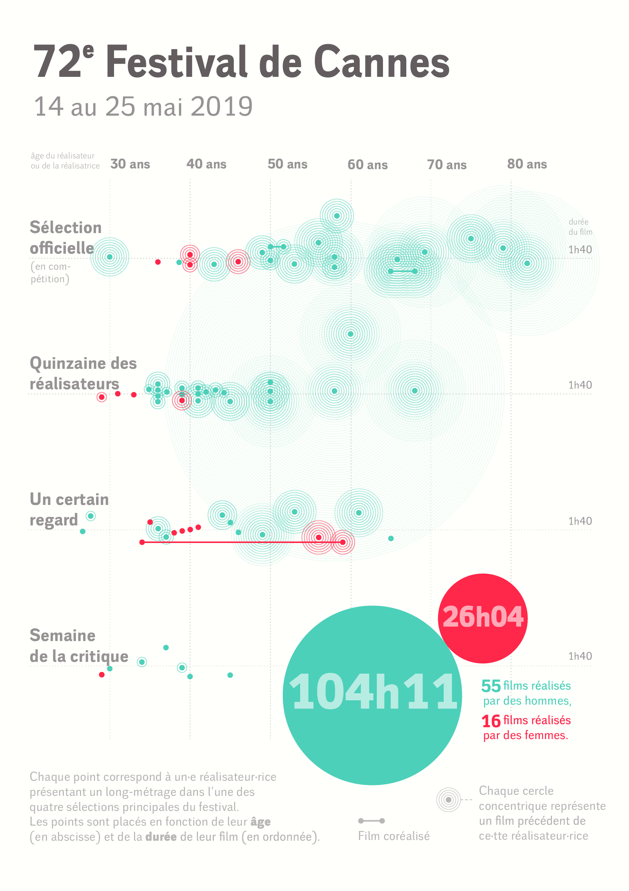
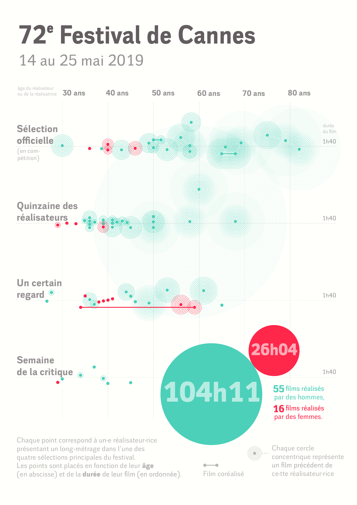

La 72e édition du Festival de Cannes
data-visualisation · mai 2019
Alors que Thierry Frémaux, le délégué général du festival, a cosigné en 2018 une charte pour la parité et la diversité dans les festivals de cinéma, les réalisatrices restent largement minoritaires dans les différentes sélections de la 72e édition du festival de Cannes. Cette visualisation, réalisée à partir d’un programme sur Processing puis retravaillée sur Adobe Illustrator, illustre la place des femmes dans la dernière édition du festival de Cannes.
Voir au format pdf 
